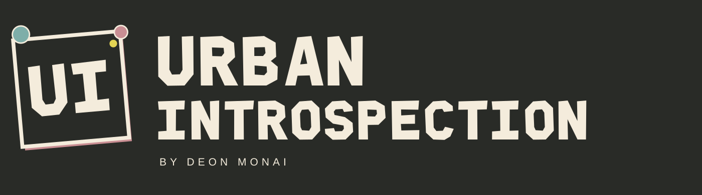
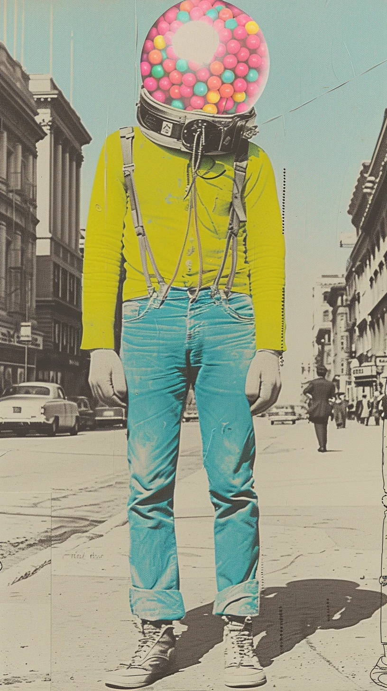
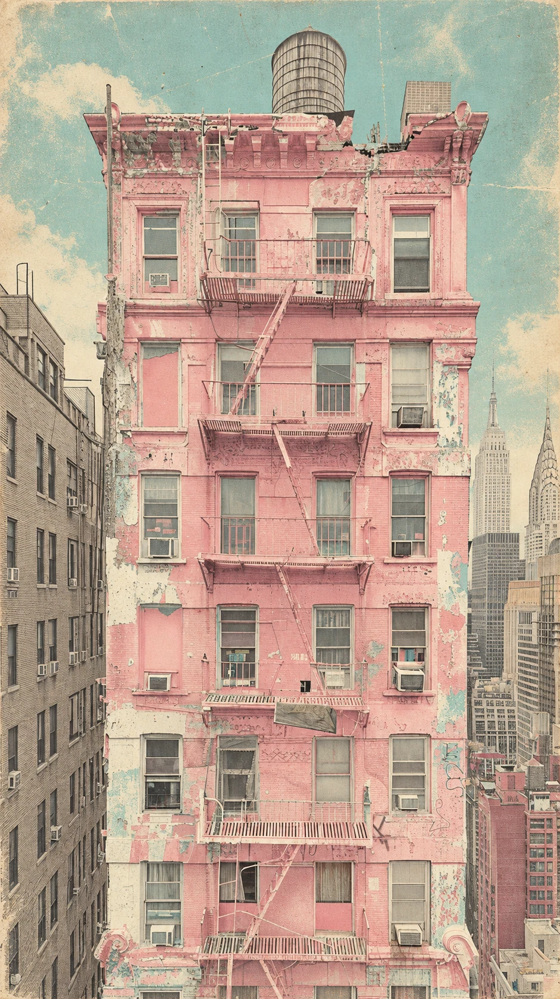
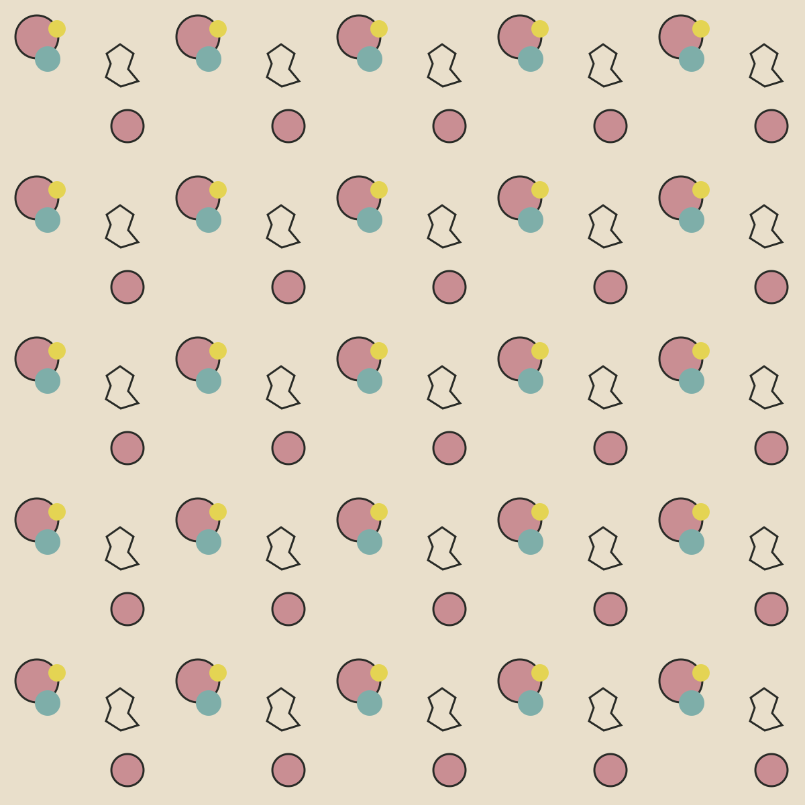

EDITION 04 / THE LIVING IDENTITYTHE NAME
THE NAME
HAS A LIFE.
A logo that leans into the room. Type that moves with you. All the color, character, and imperfect edges of Deon’s city.
THE ART LEADS ✳ THE QUIRKS STAY ✳ LET THE LETTERS MOVE ✳ THE ART LEADS ✳ THE QUIRKS STAY ✳
01 / THE LOGO SYSTEMONE NAME.
ONE NAME.
MANY SIDES.
The paper sign and candy orbs take their colors from the art. Use the full name when the brand is new to the room; the UI mark works as a small signature.
PRIMARY / TRANSPARENT

REVERSED / CHARCOALTHE SMALL SIGN / UI


02 / THE CUSTOM DISPLAY FACEROOFTOP
ROOFTOP
CUT.
A cut-paper voice for the loud parts. Type a line of your own, then move across the letters.
MOVE OVER THE LETTERS · THE FONT FILES WORK AS STILL TYPE TOO
03 / THE PALETTEPAPER.
PAPER.
CANDY. CITY.
Muted rose, faded turquoise, and yellow live against warm paper and city charcoal. Select a color to copy its screen value.
CMYK values in the kit are starting points; your printer can provide a profile-specific proof.
04 / THE FULL KITTAKE THE CITY
TAKE THE CITY
WITH YOU.
Editable logo vectors, transparent PNGs, the font, colors, social templates, business cards, hang tags, sticker designs, packaging patterns, and a seven-page guide.



Print files use placeholder contact details. Replace those before printing and confirm the final specifications with your printer.